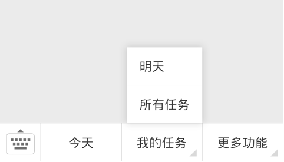

玩转微信公众号
绑定微信公众号
将滴答清单账户与微信公众号（微信号：didalist）绑定之后就可以通过微信进行创建任务，查看任务等操作。绑定方式有两种：
- 使用要绑定的滴答账户，登录滴答清单网页版。点击右上角头像，在【设置】-【个人设置】-【玩转微信公众号】中，根据提示使用微信扫描二维码即可。

2.或者打开微信–【添加朋友】–搜索“滴答清单”（微信号：didalist）公众号–关注，即可进入滴答清单的页面。

关注后，进入公众号–【更多功能】–【我的滴答账号】–根据提示选择【在微信中绑定】–选择登录方式，输入账号即可成功绑定。

注：如果是通过微信登录滴答清单的用户，可以直接使用微信公众号的功能。
创建任务
成功绑定之后，即可通过向公众号发送信息或者语音的方式在滴答清单中创建任务。
- 语音创建：发送一段语音，滴答清单会智能识别语音内的时间，在收集箱创建相应任务。
- 文字创建：发送一段文字，同样会智能识别并创建任务。
注：试试发送带有时间信息消息到微信公众号，例如“今天下午三点去开会”“周六9点去打球”等。

3. 图片创建：发送图片给滴答清单公众号，也可以创建任务。
4. 聊天记录：除了自己发送一段文字以外你甚至可以将和别人的聊天记录发送到滴答清单来创建一个任务。
长按需要保存成任务的聊天记录–更多••• –滴答清单

5. 网页链接：朋友分享的来不及看的文章或者视频，也能保存成任务，提醒自己有时间了再看。点击页面右上角【更多】—拉到底部选择“滴答清单”即可。

查看任务
微信公众号不仅可以创建任务，还可以查看【今天】【明天】和【所有任务】。 
解绑微信号
解绑微信需要登录网页版滴答清单，点击头像-【设置】-【个人设置】，选择解除绑定即可。

更多
点击底边栏右侧的【更多功能】，你可以点击【我要反馈】进入滴答清单论坛，也可以下载滴答清单客户端到你的设备。